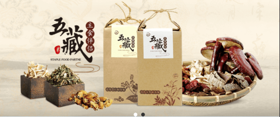

返回
膳食处方
欢迎，昵称
当前成员： 小明



食宜：
“肺色白，宜食苦，麦羊肉杏薤皆苦”——《黄帝内经素问•脏气法时论》
对于肺、大肠功能失调的饮食调理，建议适当选择味苦的食物，如:
-五谷:宜食麦子
-五果:宜食杏
-五蔬:宜食薤（又名荞头）
-五畜:宜食羊肉
食忌：
“味过于甘，心气喘满，色黑，肾气不衡。”——《黄帝内经素问•生气通天论》
喘满多由肺、大肠功能失调引起，不宜多食味甘的食物，如大枣、糯米、龙眼肉等。